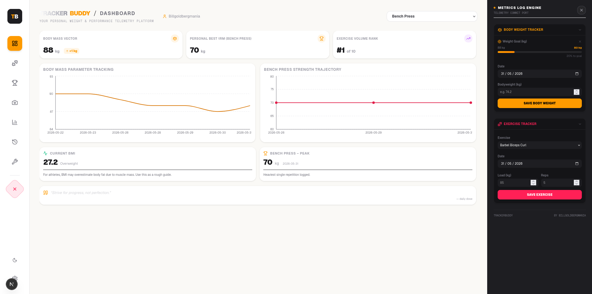
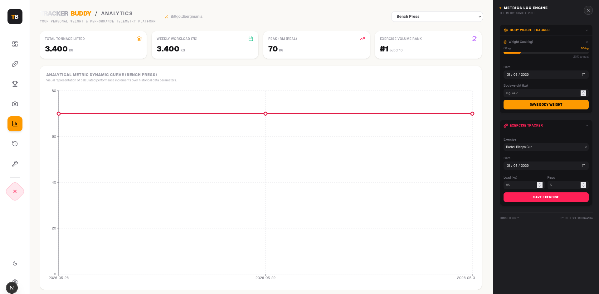
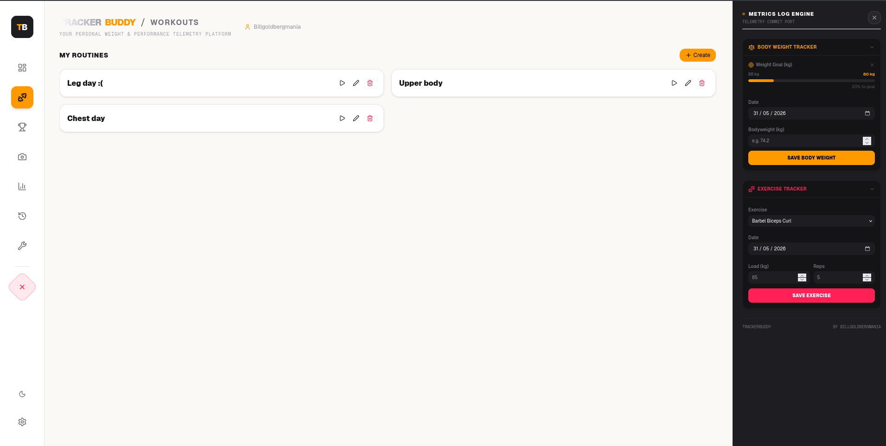
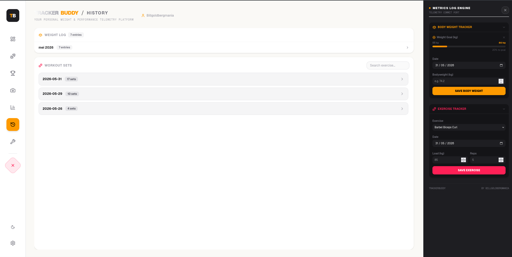
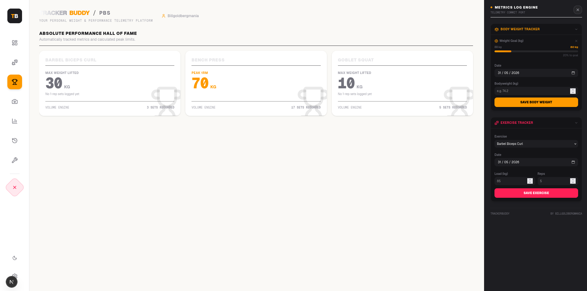
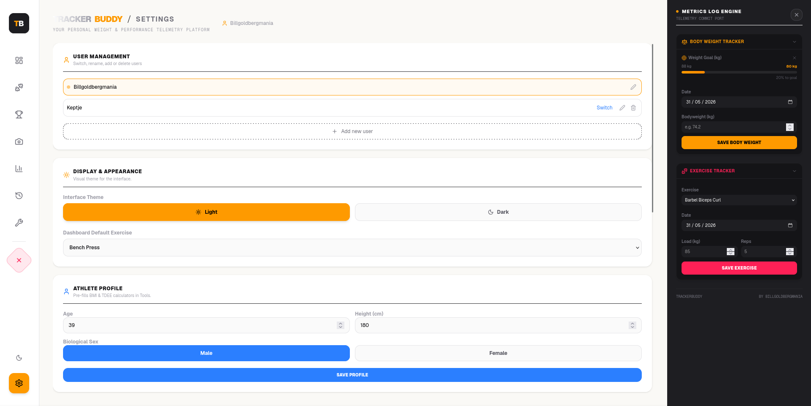

Your gym, your data.
No cloud. No subscriptions.
Trackerbuddy runs entirely on your computer. All data stays in a local SQLite file – you own it.
What’s inside
Track weight & exercises
Log body weight, sets, reps, weight. Automatic 1RM (Epley/Brzycki).
Multi‑user
Add family or partners. Switch users instantly – each with own data.
Workout routines
Create routines, log sets during guided workouts, mark warm‑ups, track failures.
Analytics & charts
Body weight trends, 1RM progression, personal bests, total volume lifted.
Progress photos
Upload photos – stored per user in the database.
Built‑in tools
1RM predictor, plate calculator (barbell load), BMI, TDEE – all offline.
Dark / Light theme
Comfortable day or night, plus kg/lbs and cm/in units.
See it in action

Dashboard – weight trends, 1RM progress, daily quote

Analytics – total volume, weekly workload, rank

Workouts – create routines and guided logging

History – weight logs and set history

Personal Bests – automatic peak detection

Settings – users, theme, units, exercise library
Pictures might not reflect the latest updates..
Install & run (production)
📦 Quick start (Linux / macOS)
git clone https://github.com/billgoldbergmania/fitness-tracker.git
cd fitness-tracker
npm install
npm run build
npm run startThen open http://localhost:3000. Your data lives in tracker.db.
✔ Requires Node.js 18+.
✔ First run creates the database automatically.
🪟 Windows (PowerShell / CMD)
git clone https://github.com/billgoldbergmania/fitness-tracker.git
cd fitness-tracker
npm install
npm run build
npm run startThe same commands work on Windows (Node.js must be installed).
Access at http://localhost:3000.
⚡ To run on your local network, first modify package.json – see “Network access” below.
🔄 Everyday use
After the initial build, just run:
cd fitness-tracker
npm run startKeep the terminal open while using the app. Press Ctrl+C to stop the server.
🌐 Make it available on your whole home network
Option 1: Modify the start script (permanent)
Edit package.json – change the "start" script to:
"start": "next start -H 0.0.0.0"Then run:
npm run startAfter that, any device on your Wi‑Fi can reach Trackerbuddy at:
http://<your-computer-ip>:3000.
Option 2: One‑off network binding (no config change)
npx next start -H 0.0.0.0This also exposes the server to your network but doesn’t change package.json.
⚠️ Firewall tip: If devices cannot connect, allow port 3000:
sudo ufw allow 3000 # Linux (ufw)
sudo firewall-cmd --add-port=3000/tcp --permanent
sudo firewall-cmd --reload # firewalldWindows: allow Node.js in Windows Defender Firewall.
📱 Use it on your phone (or tablet)
1. Find your computer’s IP address.
Linux/macOS: ip addr show | grep -oP '(?<=inet\s)\d+(\.\d+){3}' | grep -v 127.0.0.1
Windows: ipconfig → look for “IPv4 Address”.
2. On your phone, open the browser and go to http://<IP>:3000.
3. The interface is fully responsive – works great on mobile.
✔ First load may take a few seconds (caching + cold start). After that it’s snappy.
KDE Plasma desktop integration (Linux)
Make Trackerbuddy behave like a native app – auto‑start on login and a proper launcher icon.
🔧 Step 1: systemd user service
Create a systemd service so the server runs in the background.
mkdir -p ~/.config/systemd/user
nano ~/.config/systemd/user/trackerbuddy.servicePaste this (adjust WorkingDirectory to your path):
[Unit]
Description=Trackerbuddy Next.js server
After=network.target
[Service]
Type=simple
WorkingDirectory=/home/yourusername/Documents/fitness-tracker
ExecStart=/usr/bin/npm run start
Restart=on-failure
Environment="PATH=/usr/bin:/usr/local/bin"
[Install]
WantedBy=default.targetThen enable & start:
systemctl --user daemon-reload
systemctl --user enable trackerbuddy.service
systemctl --user start trackerbuddy.service✔ The server now starts automatically when you log in.
🚀 Step 2: desktop launcher
Create a .desktop file to open the browser.
mkdir -p ~/bin
nano ~/bin/trackerbuddy-openPaste:
#!/bin/bash
xdg-open http://localhost:3000Make it executable:
chmod +x ~/bin/trackerbuddy-openThen create the desktop entry:
nano ~/.local/share/applications/trackerbuddy.desktopPaste:
[Desktop Entry]
Name=Trackerbuddy
Comment=Open fitness tracker
Exec=/home/yourusername/bin/trackerbuddy-open
Icon=/home/yourusername/Documents/fitness-tracker/public/favicon.ico
Terminal=false
Type=Application
Categories=Utility;Sports;Refresh the menu:
update-desktop-database ~/.local/share/applications/Now find “Trackerbuddy” in your app launcher. Drag it to the desktop or panel.
🧹 Manage the service
systemctl --user status trackerbuddy.service # check if running
systemctl --user stop trackerbuddy.service # stop the server
systemctl --user start trackerbuddy.service # start againPro tip: create a second launcher with systemctl --user stop trackerbuddy.service to stop the server without using the terminal.
🪟 Running on Windows (simple method)
Option A: Desktop shortcut
After installing Node.js, clone the repo and build once:
git clone https://github.com/billgoldbergmania/fitness-tracker.git
cd fitness-tracker
npm install
npm run buildThen create a .bat file with:
cd C:\path\to\fitness-tracker
npm run startDouble‑click the batch file to start the server, then open http://localhost:3000 in your browser.
Option B: Auto‑start with Windows
Use pm2 (Node.js process manager):
npm install -g pm2
cd fitness-tracker
pm2 start npm --name trackerbuddy -- run start
pm2 save
pm2 startupThe server will run in the background and start automatically on boot.
Open browser to http://localhost:3000.
🔗 Windows network access
Edit package.json → change "start" to "next start -H 0.0.0.0".
Then allow Node.js in Windows Defender Firewall (inbound rule for port 3000).
Find your IP via ipconfig and access from other devices.
Frequently asked questions
Never. All data stays in
tracker.db. No external API calls, no analytics.Yes – run the server on your computer and open the network URL on your phone.LAN only by default!
Settings → User Management. Add, rename, or delete users. Click “Switch” to change active user.
Yes – “Export as CSV” button in Settings. All weight logs and workout sets are downloaded.
Back up
tracker.db. If deleted, the app recreates a fresh database (old logs are lost).Yes – choose units in Settings. All charts and logs auto‑convert.
Assets are cached after first visit. The server also may need a few seconds to warm up. Reload once – subsequent visits are fast.